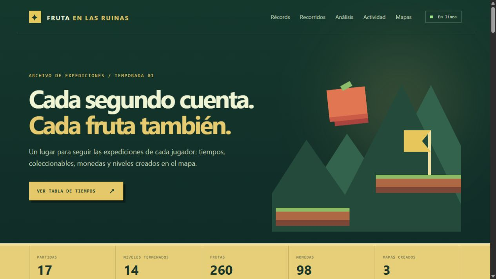
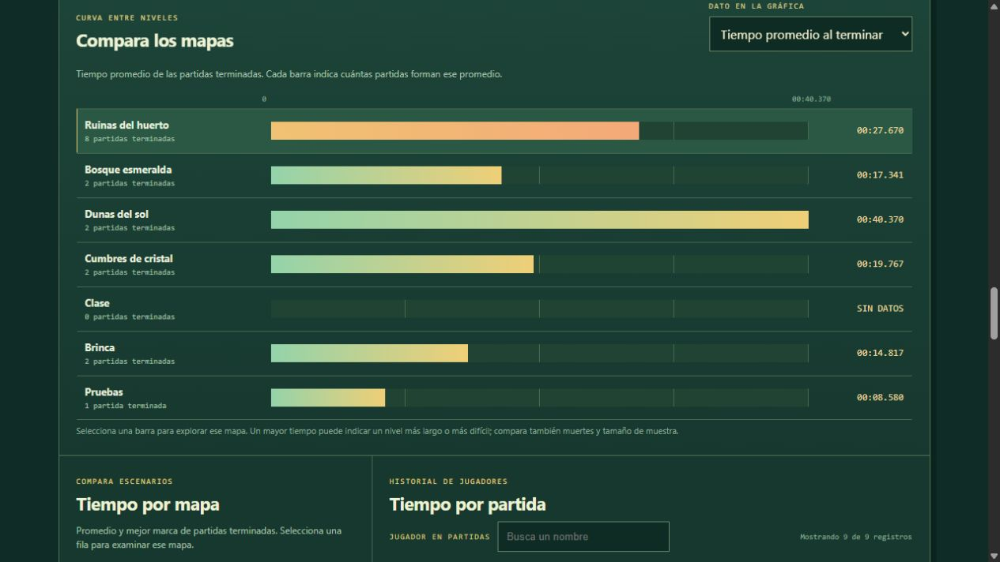
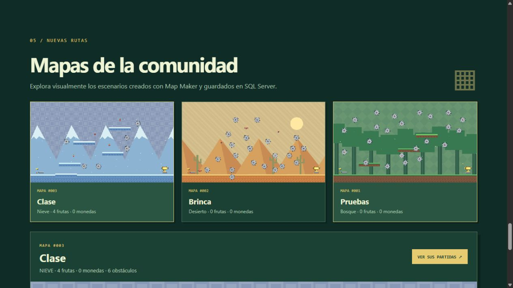

Una vista de partidas, niveles, frutas y monedas de los jugadores.

La gráfica muestra el tiempo promedio para terminar cada mapa y permite seleccionar el dato a estudiar.

Explora cada escenario creado con Map Maker y guardado en SQL Server.
